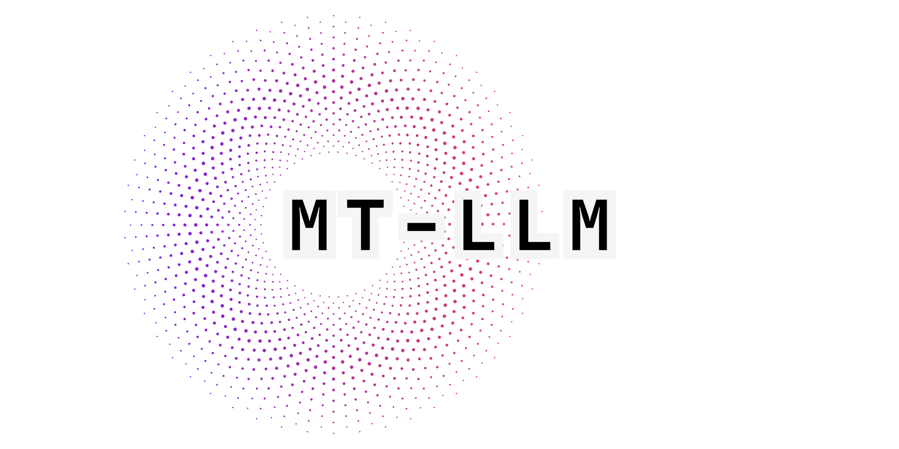

MTLLM Python library provides convenient access to a large number of easy to use and customizable APIs to be used in Jaseci's Jaclang by llm feature. The Library provides automatic output fixing, output type validation, different prompting techniques, and more.
warning IMPORTANT
Though this is can be used with python projects, it is primarily intended to be used with Jaseci's Jaclang.
1link$pip install mtllm